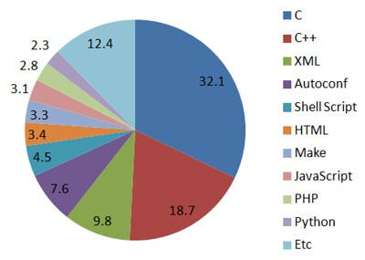
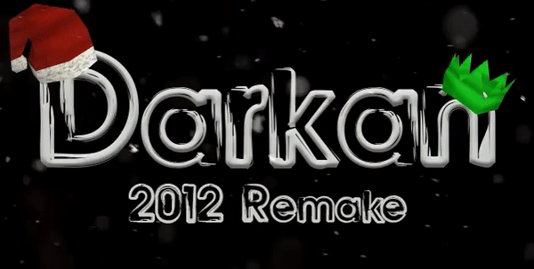
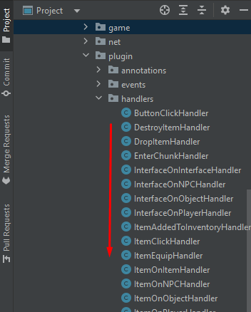
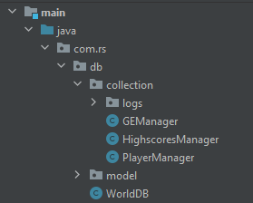
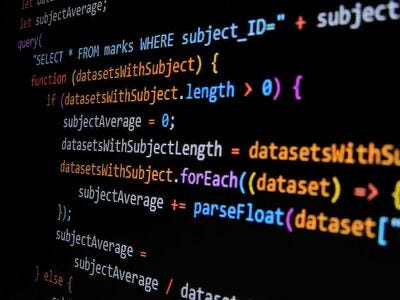

The featured image for this post is a meme I love to send to new people who want to create an RSPS.
Me, personally, I learned programming through RSPS.
It was a great experience and I had a ton of fun.
At the end of the day though, RSPS development is a niche. The main reason to learn how to make a Runescape clone is to learn how to code and have fun.
Every era of Runescape has been created already. They are at a depth where no single person can recreate it in under 3-5 years of constant development all day.
Remember Runescape was built by a large team. A single person cannot completely do all tasks of this larger team which took them many years.
I am saying this to help you set expectations.
The reality is, most RSPS are mediocre because, well RSPS takes a lot of time.
Of these four steps for learning to code:
- Fundamentals
- Language
- Framework
- Niche
RSPS is at the very end, #4.
There is no super in-depth documentation on RSPS and most sources you use as reference are completely different
Choose a Language
The default and most used language in RSPS is Java.
However, to start with RSPS I recommend picking any language. It can be any complete language.
Photo by Linux Screenshots
The goal should be to learn that language well through RSPS.
You will be using other code sources as a reference. But you should be able to translate their code to your chosen language.
Much of the functionality of the server should wrap around pre-built libraries.
So when working in a language like C++, you have to find similar libraries as in your referred source.
Choose a Database
SQL, No-SQL, Amazon S3, pick the database you want to learn & create.
I recommend using JSON as your player save and converting in-memory player classes into JSON.
This is known as serialization.
Basically, convert the instance of Player into JSON and re-read the JSON file upon server start up.
Often there are libraries for this, like GSON in Java or nlomann in C++.
Like this:
#include <iostream>
#include <fstream>
#include <nlohmann/json.hpp>
using json = nlohmann::json;
class MyClass {
public:
int id;
std::string name;
// Constructor
MyClass(int _id = 0, const std::string& _name = "") : id(_id), name(_name) {}
// Function to serialize the class to JSON
json toJson() const {
return {
{"id", id},
{"name", name}
};
}
// Function to deserialize the class from JSON
static MyClass fromJson(const json& j) {
return MyClass(j.at("id").get<int>(), j.at("name").get<std::string>());
}
};You essentially convert classes to and from JSON and into your database.
Choose Closed-Source or Open-Source
There are pros and cons to open-source & closed-source.
Typically, if you plan on doing microtransactions closed-source is the way to go. You completely own private source servers.
But, you get a lot of attention with open-source projects.
I have gotten 15 or so followers on GitHub in 8 months when I was making my open 727 Runescape base.
The goal of the base was to completely open up 727 to new RSPS developers.
It got a little popular and I had a lot of fun.
In the end I joined Darkan RSPS and absolutely love the Darkan source.
Always Work From a Base
A base is an already functional Client, server & cache which all work together out of the box.
I always would recommend starting with a base.
Photo by Etienne Girardet
At the minimum an RSPS base should have the ability to login, have a lobby, have path-finding and combat.
This is the minimum and you should not start from a base without these.
It would take waay to much time and effort starting from a base without these features.
It is worth searching high and low for bases meeting these requirements.
In addition I recommend using one primary base and a few secondary reference ones.
Choose an era according to a good base
The base is the most important part of starting an RSPS.
Instead of starting with your "favorite era" of Runescape.
You should have some leeway with yourself and choose a Runescape version which matches a good base.
I will list some great bases to start from for different revisions:
- 2012 Open727: https://github.com/CSS-Lletya/open727
- 2011Scape: https://github.com/2011Scape/installation-guide
- 2009Scape: https://gitlab.com/search?search=2009scape&nav_source=navbar
- 2006Scape: https://github.com/2006-Scape/2006Scape
- 2004Scape: https://github.com/2004scape
- RSC: https://github.com/Open-RSC
- 2001Scape: https://gitlab.com/open-runescape-classic/core
So pick one main base to refer to like the ones above and several other bases to refer to during your development.
Always refer to Rune-Server and other RSPS devs
When building on top of a base, google search, LLMs and other RSPS devs are your greatest research resources.
Most answers will be on Rune-Server. You should also join the Rune-server discord to ask questions to other developers.
The best reference RSPS base
I have looked through a lot of RSPS bases. By far, the cleanest, most performant and thorough code source is DarkanRSPS Remake.
Every feature you need for recreating Runescape exists in that open-source project.
In reality, Darkan has a lobby that is closed -source.
Which means you cannot use it as a base.
But, Darkan is a treasure trove of information you can use in your private source as a reference.
Create a Plugin System
This is standard RSPS practice.
One of the first things you should do when coding an RSPS is create a plugin system.
The goal is to be able to write gameplay code anywhere in your code source.
An example of this can be found in Darkan, take a look:
@PluginEventHandler
public class ImpCatcher extends QuestOutline {
//...
public static NPCClickHandler mizgogHandler = new NPCClickHandler(new Object[] { WIZARD_MIZGOG }, e -> {
if (e.getOption().equalsIgnoreCase("talk-to"))
e.getPlayer().startConversation(new MizgogD(e.getPlayer()));
else if (e.getOption().equalsIgnoreCase("trade") && e.getPlayer().isQuestComplete(Quest.IMP_CATCHER))
ShopsHandler.openShop(e.getPlayer(), "wizard_mizgog");
else
e.getPlayer().startConversation(new MizgogD(e.getPlayer()));
});
}NPCClickHandler is one of 25+ plugins. These plugins allow you to attach code to NPCs, items, tiles, game objects, the player, the server itself and more.
Take a look:
I can copy and paste any of those handlers anywhere in the source and it will work.
Create Views in a Database
As you develop your server, you should make a highscores file to database output to constantly update your hiscores.
Player save files and hiscores save files inside a database are a requirement for creating a website for your RSPS.
This likely is best embedded in the server.
In Darkan there is a grand exchange view, highscores view and player view.
From there you have the choice of making an API inside your server or as a microservice.
Summary
It can be frustrating to not make the progress you would like in RSPS development.
It is a slow process and instead of aiming for extraordinary progress, it is best instead to just have fun.
Photo by Gabriel Heinzer
In addition, you will find yourself refactoring all your code every few months.
Your first draft of RSPS code will always be dirty and non-performant, at least to your future self.
Keep in mind you will grow. A year from now you may cringe at the code you write today.
Lastly, remember, picking a good primary base is the most impactful part to your development speed.
Anywho, I hope you learned something...
Happy coding!
Resources
What is an RSPS: What Is a Runescape Private Server?
Learn Java: Unlock Your Java Brilliance
Darkan Documentation: https://darkan.readme.io/docs